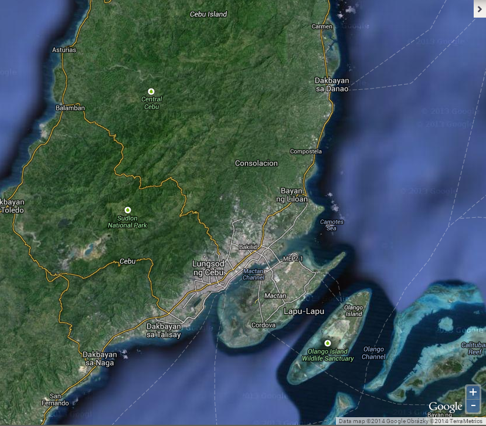
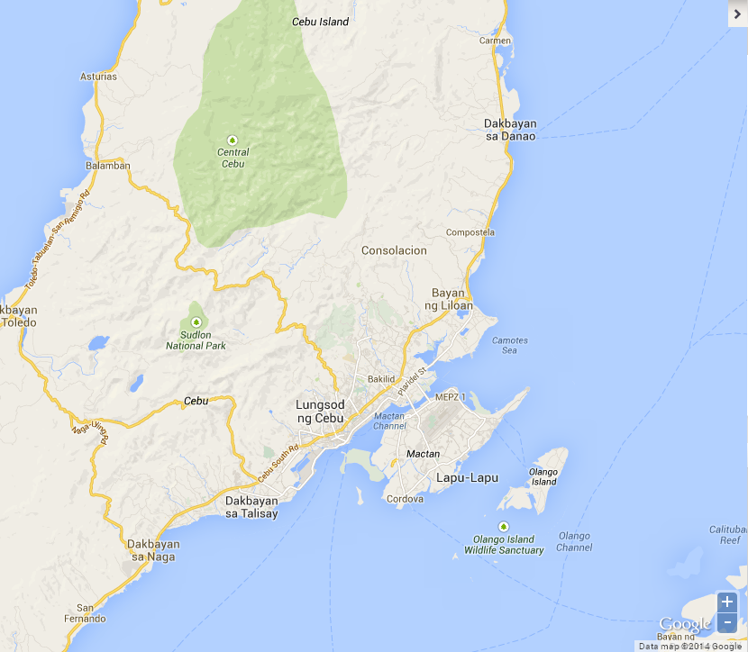
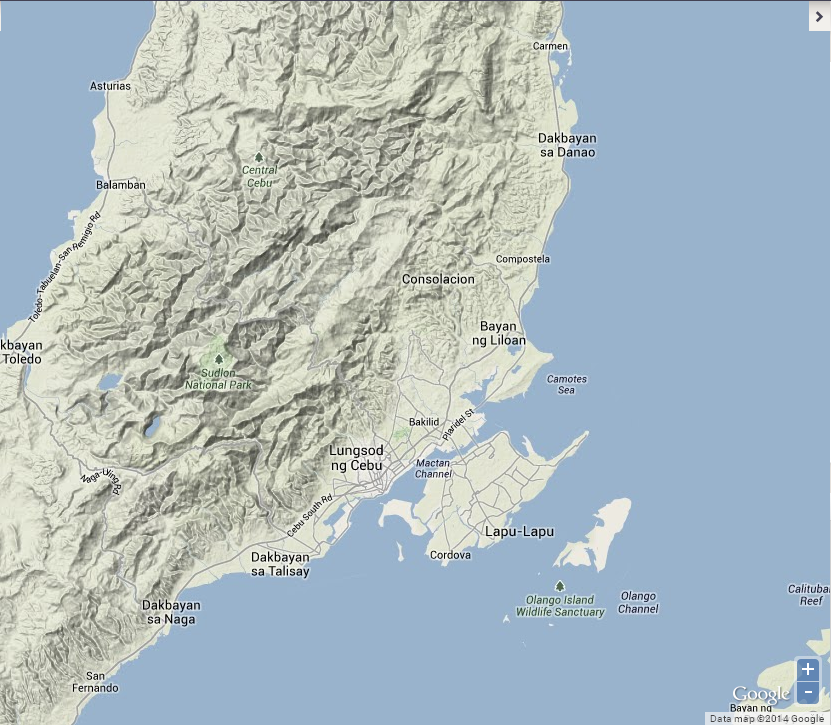
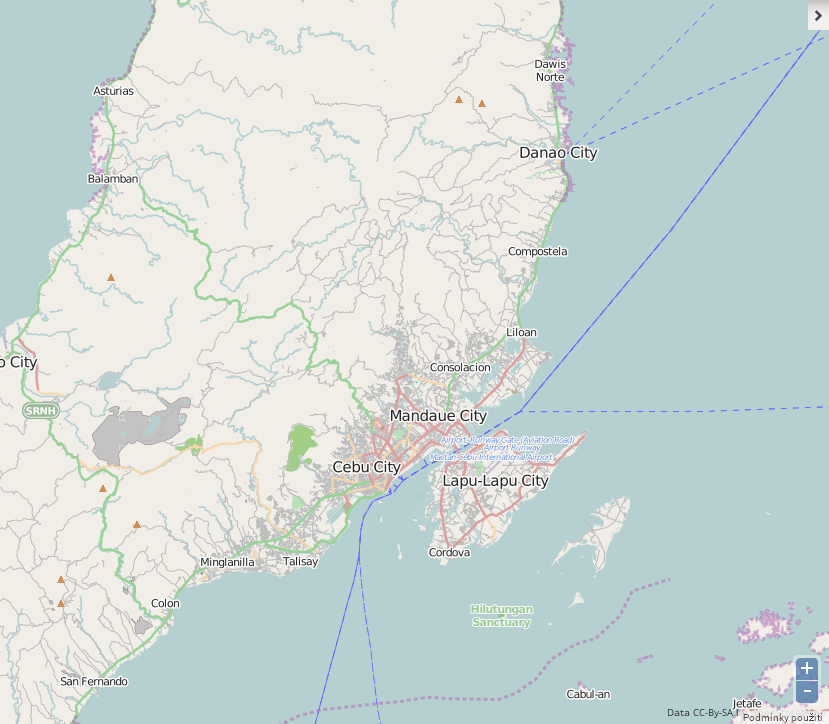

As base layers, Google Street, Terrain or Hybrid maps (all credited to Google) or Open Street Map can be used.
You can select the layer to be displayed in the map by checking its check box.
Google Hybrid combines EO based imageries with road map and labels.

Google Street provides information on road data.

Google Terrain lets you see relief maps of 3D terrain.

Open Street Map (OSM) is the result of a collaborative project that creates and distributes a free editable map of the world.
